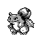
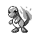
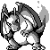

Why Missigno. clones the sixth item?
November/2020 Javier Cabezas
One of the most well-known effects of encountering Missigno. is the duplication of the sixth item of the player's bag. This was a really easy method to get an infinite amount of rare items such as Master Balls, Rare Candies, TMs and Moon Stones.
To understand the technical reason of the item duplication the first step is to learn about how the game stores the pokémon pokédex data. Each pokémon on the list has two different boolean values related to their relationship with the player: one value for seen/unseen and another one for captured/not captured. This creates 3 different states: non seen and non captured, seen but not captured, captured and seen. The state "captured but not seen" its not possible to recreate in game.
Pokédex example. In this picture bulbasaur is seen, but not captured. Squirtle (the best starter) is both captured and seen. Ivysaur, venusaur, charmander, etc. are neither seen or captured.
"Seen" bit
So, if we go to the memory address D2F716 you can find a byte that determine the seen bit for the 8 first pokémon (from bulbasaur to wartortle). In the case of my game, the current value in this memory address is 4016.

Selected on the lower part of the picture the current value of 4016 is shown
How can that be translated into the picture of the pokédex shown? If we transform the 40 from hexadecimal to binary we get 4016 = 0100 00002
Since the game-boy works with little endian (basically, by reading the memory in reverse) this seen bits are translated like this table:
| 0 | 0 | 0 | 0 | 0 | 0 | 1 | 0 |
 |
 |  |
 |  |
 |  |
 |
So,